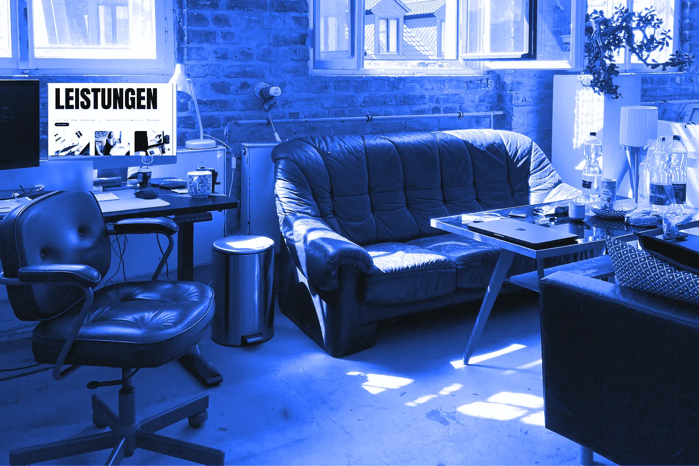
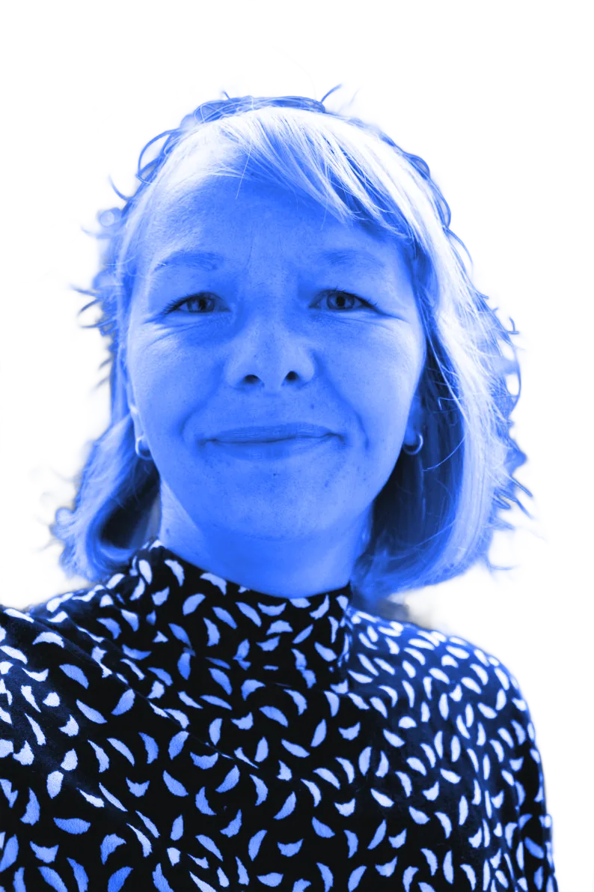
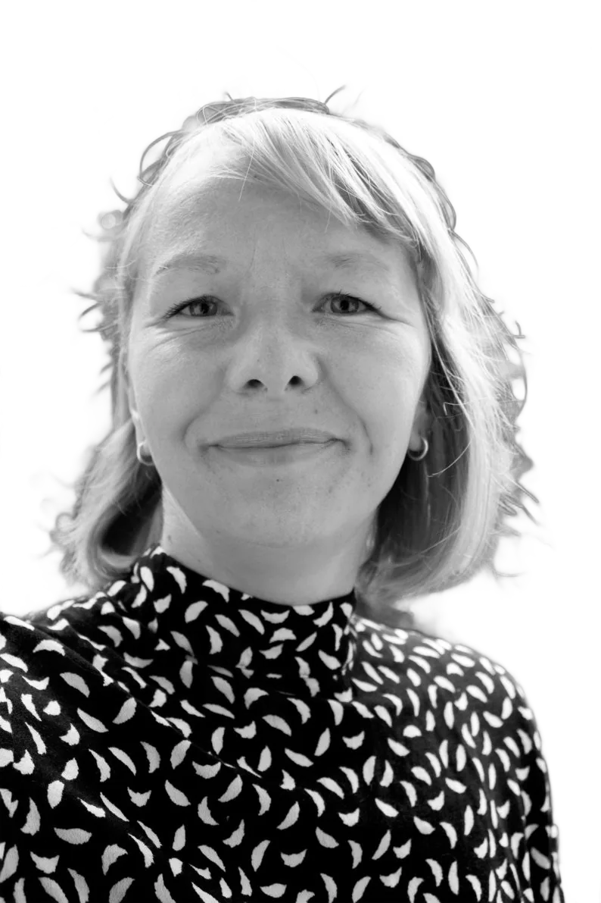
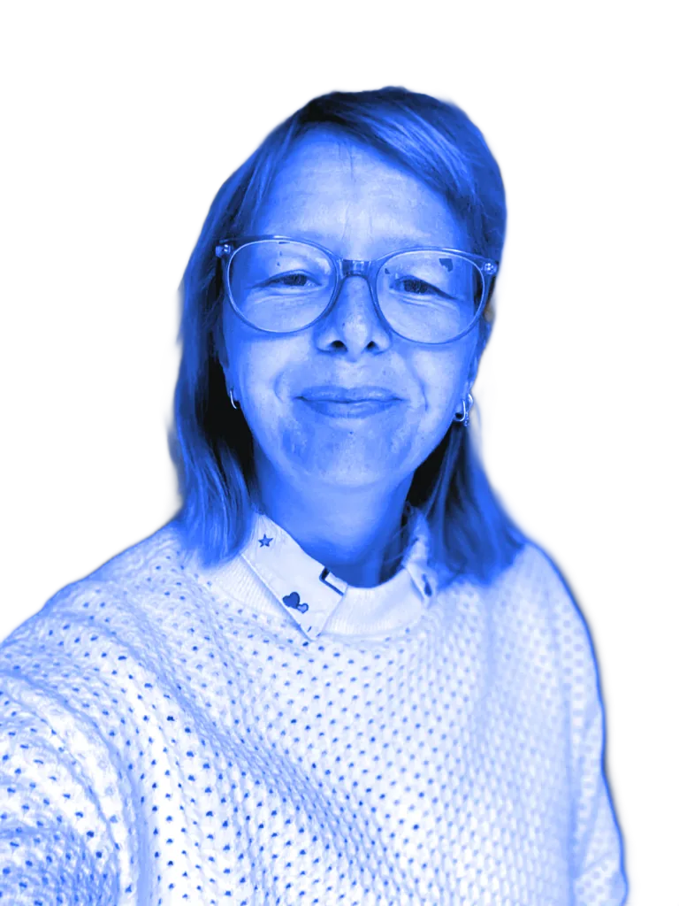
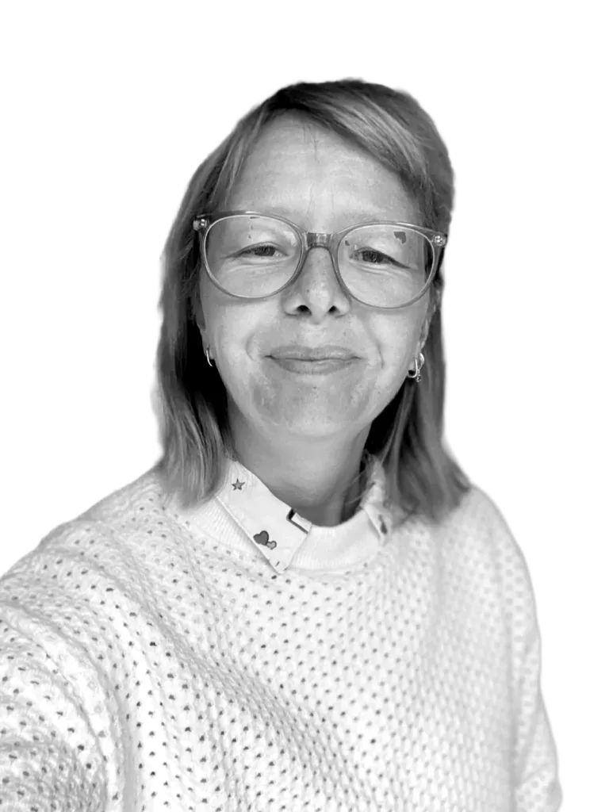
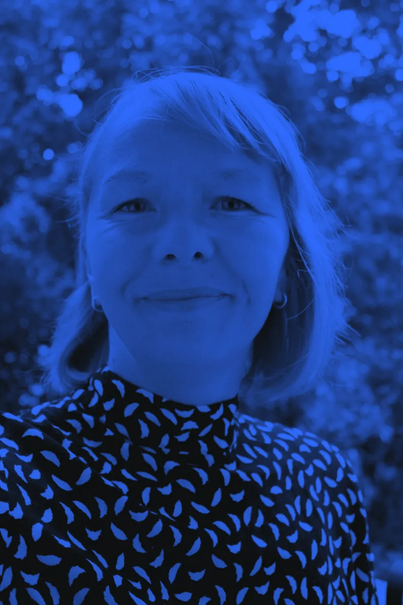
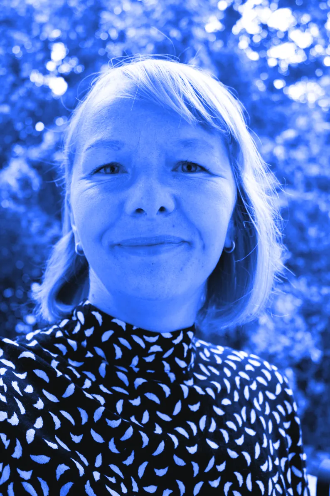
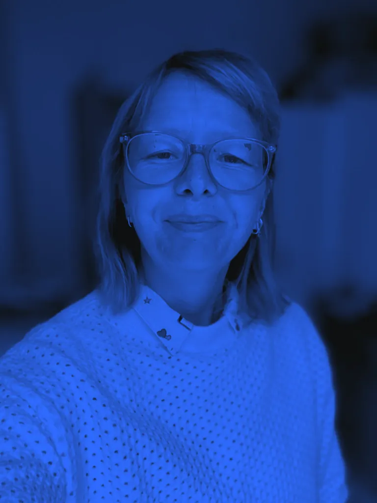
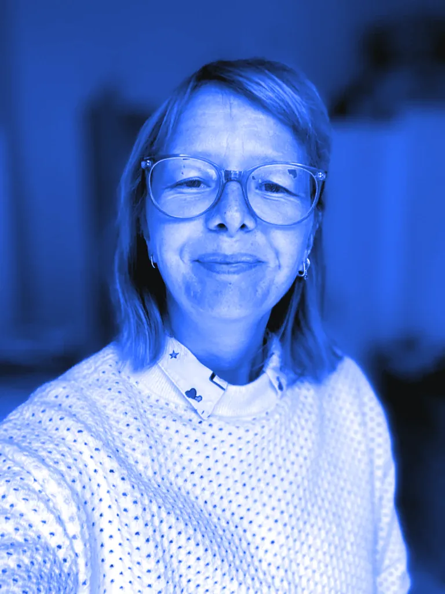

Entwurf Startseite: H1 und Bildwelt
Alle Bewegungen, die von selbst starten, laufen einmal beim Laden und stehen nach höchstens 5 Sekunden still. Beim Scrollen und beim Darüberfahren mit der Maus bewegen sich die Bilder zusätzlich ein wenig mit. Wer im Betriebssystem „Bewegung reduzieren“ eingestellt hat, sieht alles sofort ruhig.
Variante A1 · Farbverlauf Blau und Rosa
Ihr Weg zu digitaler Sichtbarkeit
Rosa (#ff4fa3) stammt aus meinem Farbtafel-Vorschlag in Figma (Seite „Farbtafel (Vorschlag)“) und ist nicht freigegeben. Kontrast Rosa auf Weiß: 3,0 : 1 – reicht nur für sehr große Schrift.
Variante A2 · Farbverlauf Blau und Schwarz (innerhalb der heutigen Regeln)
Ihr Weg zu digitaler Sichtbarkeit
Variante B · Grundformen, einmalig bewegt
Ihr Weg zu digitaler Sichtbarkeit
Kreis rollt herein, Quadrat fällt, Halbkreis klappt hoch, Dreieck springt auf – danach Ruhe. Zwischen Blau und Schwarz bleibt immer eine weiße Fuge.
Bildwelt in Blau · Foto im ganzen Bild, leicht bewegt

Ihr Weg zu digitaler Sichtbarkeit
Freigestellt · Hintergrund einfarbig Blau, Person blau getönt
Ihr Weg zu digitaler Sichtbarkeit

Freigestellt: blau getönt oder Schwarz-Weiß



Freigestellt mit einem frei verfügbaren KI-Modell (IS-Net). Die blaue Fläche kommt aus dem CSS – die Farbe lässt sich also jederzeit tauschen.
Ganzes Foto eingefärbt: zwei Färbungen zum Vergleich




Die Bilder bewegen sich beim Scrollen ein wenig mit (in Browsern, die das noch nicht können, bleiben sie ruhig). Erzeugt mit werkzeuge/grafiken/duoton.py aus den vorhandenen Schwarz-Weiß-Fotos.